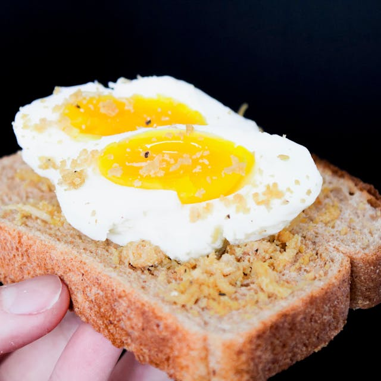

OVO FRITO

Ingredientes:
- 1 ovo
- 1 colher (chá) de azeite (ou óleo)
- Sal e pimenta-do-reino moída na hora a gosto
Modo de preparo:
- Numa tigela pequena quebre o ovo, com cuidado para não furar a gema.
- Leve uma frigideira antiaderente ao fogo baixo e regue com 1 colher (chá) de azeite. Com cuidado, transfira o ovo para a frigideira e deixe cozinhar por cerca de 2 minutos – com uma espátula de silicone, vá puxando a borda da clara para perto da gema, para manter o formato arredondado do ovo.
- Assim que a clara começar a firmar, tempere com sal e pimenta a gosto e tampe a frigideira para o ovo terminar de fritar mas a gema ainda ficar mole – o vapor permite que a clara cozinhe por igual sem a base do ovo queimar. Sirva a seguir.